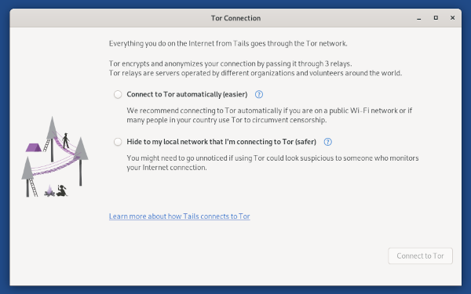

Contribute to Tails by testing our release candidate for Tails 4.20!
We are very excited about it and cannot wait to hear your feedback :)
What's new in 4.20~rc1?
Tails 4.20, scheduled for July 13, will completely change how to connect to the Tor network from Tails. We would like as many people as possible to test this release candidate to be able to fix as many problems as possible before we release 4.20 to all users.

Over the years, we have identified many issues in how to connect to the Tor network from Tails, thanks to your feedback. With this release candidate, we are trying to solve the most important and pressing of these issues:
The lack of feeback while connecting to the Tor network.
The option to use Tor bridges has to be turned on in the Welcome Screen and cannot be changed afterwards.
The lack of default Tor bridges.
The previous configuration screen for Tor bridges wasn't accessible to people who use the screen reader.
The lack of guidance when Tails is not connected to a local network yet.
What's new since 4.19~rc1?
The Tor Connection experience has had several improvements and bugfixes since 4.19~rc1.
OnionShare was upgraded to 2.2, which features significant changes compared to version 1.3.2 that we used to ship.
For more details, read our changelog.
Get Tails 4.20~rc1
To upgrade your Tails USB stick and keep your persistent storage
If you are running Tails 4.2 or later, you can upgrade like this:
Start Tails and set an administration password.
Connect to the network and make sure Tor is connected successfully.
If you are running Tails 4.19~rc1 you must run this command in a Terminal or you will experience issues:
torsocks curl --silent https://tails.boum.org/isrg-root-x1-cross-signed.pem \ | sudo tee --append /usr/local/etc/ssl/certs/tails.boum.org-CA.pemEnter the administration password when asked for the "password for amnesia".
Run this command in a Terminal:
echo TAILS_CHANNEL=\"alpha\" | sudo tee -a /etc/os-release && \ tails-upgrade-frontend-wrapperEnter the administration password when asked for the "password for amnesia".
After the upgrade is applied, restart Tails and choose Applications ▸ Tails ▸ About Tails to verify that you are running Tails 4.20~rc1.
Download Tails 4.20~rc1
Download and install Tails 4.20~rc1 as usually.
All the data on this USB stick will be lost. Don't install Tails 4.20~rc1 on any USB stick that already has a Persistent Storage, upgrade instead.
Direct download
For USB sticks (USB image)
OpenPGP signature
SHA256SUM: 7b37ad1cb5cf8e8184676b1ac3d3a66e58dbfa70bf4c13f32f769df304eddd71For DVDs and virtual machines (ISO image)
OpenPGP signature
SHA256SUM: bc4cc51e7e0bc570ccf716aa06f151ca432ba8e78d25861d89b6d5d338aebcdc
BitTorrent download
What to test in Tails 4.20~rc1?
We think Tails 4.20~rc1 is in pretty good shape, but it still has a few rough edges. We need your help to identify as many new problems as possible!
We are particularly interested in any issues you experience with time syncing, especially when reported using WhisperBack. Also, we really appreciate testing of diverse and rare network configurations:
When connecting to Tor without bridges fails.
When Tails is not connected to a local network yet.
When disconnecting from a Wi-Fi network with Internet connectivity and then reconnecting to a different Wi-Fi network without Internet connectivity.
When disconnecting from Wi-Fi network that don't require Tor bridges and the reconnecting to different Wi-Fi network that requires Tor bridges.
When connecting to a Tor bridge that works at first but then stops working.
When connecting to the Internet using a proxy.
Tell us if anything is unclear, confusing, or not working as you would expect.
Please, send your feedback to tails-testers@boum.org (public mailing list).
If you are comfortable with the command line, check our hacking tips. They contain firewall rules that can be used to block access to the Tor network without bridges or simulate a broken bridge.
Known issues in 4.20~rc1
- Korean and Polish localization is not available. We will attempt to fix this in the final Tailss 4.20 release.
What's coming next?
Tails 4.20 will be the first release of a series of improvements to connect to Tor. Next, we will work on:
- Saving Tor bridges to the Persistent Storage (#5461)
- Detecting better when the computer has no supported Wi-Fi hardware (#14534)
- Detecting captive portals (#5785)
- Helping people fixing their clock when failing to connect to
obfs4bridges (#15548)
The learn more about our plans, read our blueprint on network connection.
Happy testing!